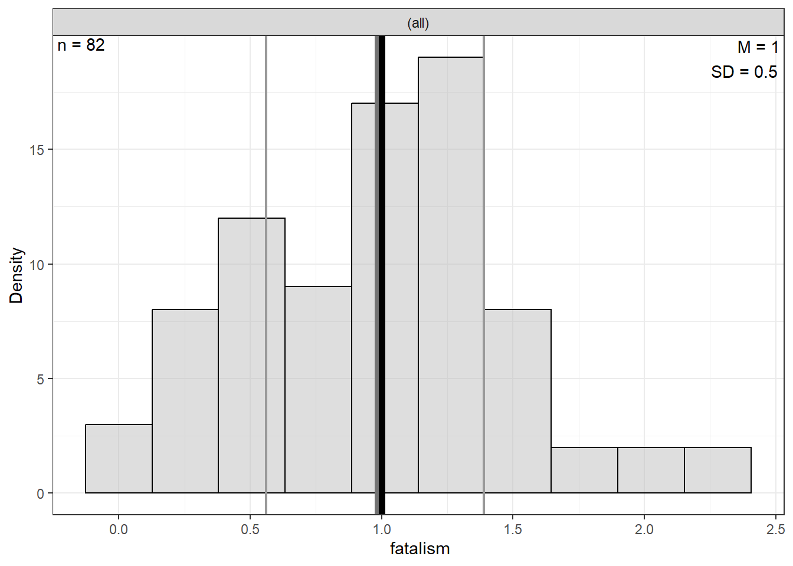

7 Ex: Ginzberg Depression
References:
http://www.philender.com/courses/intro/notes/cor1.html https://lytarhan.rbind.io/post/variancepartitioning/ https://stats.stackexchange.com/questions/552451/which-r-functions-are-correct-for-estimating-partial-eta-squared-for-effects-in
# install.packages("remotes")
# remotes::install_github("sarbearschwartz/apaSupp")
# remotes::install_github("ddsjoberg/gtsummary")
library(carData)
library(tidyverse)
library(broom)
library(naniar)
library(corrplot)
library(GGally)
library(gtsummary)
library(apaSupp)
library(performance)
library(interactions)
library(car)
library(effects)
library(emmeans)
library(ggResidpanel)
library(modelsummary)
library(ppcor)
library(jtools)
library(olsrr)
library(DescTools)
library(effectsize)
library(ggpubr)7.1 PURPOSE
7.1.1 Research Question
Is there a relationship between depression and beliefs (simplicity and fatalism)?
7.1.2 Data Description
The data for psychiatric patients (n = 84) hospitalized for depression is provided by the carData package.
Source: Personal communication from Georges Monette, Department of Mathematics and Statistics, York University, with the permission of the original investigator.
References: Fox, J. (2016) Applied Regression Analysis and Generalized Linear Models, Third Edition. Sage.
7.1.2.1 Variables
simplicityMeasures subject’s need to see the world in black and whitefatalismFatalism scaledepressionBeck self-report depression scale
Rows: 82
Columns: 6
$ simplicity <dbl> 0.92983, 0.91097, 0.53366, 0.74118, 0.53366, 0.62799, 0.778…
$ fatalism <dbl> 0.35589, 1.18439, -0.05837, 0.35589, 0.77014, 1.39152, 0.35…
$ depression <dbl> 0.59870, 0.72787, 0.53411, 0.56641, 0.50182, 0.56641, 0.469…
$ adjsimp <dbl> 0.75934, 0.72717, 0.62176, 0.83522, 0.47697, 0.40664, 0.845…
$ adjfatal <dbl> 0.10673, 0.99915, 0.03811, 0.42218, 0.81423, 1.23261, 0.297…
$ adjdep <dbl> 0.41865, 0.51688, 0.70699, 0.65639, 0.53518, 0.34042, 0.421…7.2 EXPLORATORY DATA ANALYSIS
Before embarking on any inferencial anlaysis or modeling, always get familiar with your variables one at a time (univariate), as well as pairwise (bivariate).
7.2.1 Univariate Statistics
Center: mean and median Spread: standard deviation, range (max - min), interquartile range (Q3 - Q1)
df_ginz %>%
dplyr::select("Simplicity" = simplicity,
"Fatalism" = fatalism,
"Depression" = depression) %>%
apaSupp::tab_desc(caption = "Description of Psychiatric Patients Hospitalized for Depression")Measure | NA | M | SD | min | Q1 | Mdn | Q3 | max |
|---|---|---|---|---|---|---|---|---|
Simplicity | 0 | 1.00 | 0.50 | 0.25 | 0.66 | 0.88 | 1.27 | 2.85 |
Fatalism | 0 | 1.00 | 0.50 | -0.06 | 0.56 | 0.98 | 1.39 | 2.22 |
Depression | 0 | 1.00 | 0.50 | 0.47 | 0.57 | 0.82 | 1.37 | 2.25 |
Note. NA = not available or missing. Mdn = median. Q1 = 25th percentile, Q3 = 75th percentile. N = 82. | ||||||||


7.2.3 Bivariate Statistics
df_ginz %>%
dplyr::select("Simplicity" = simplicity,
"Fatalism" = fatalism,
"Depression" = depression) %>%
apaSupp::tab_cor(caption = "Correlations")Variables | r | p | ||
|---|---|---|---|---|
Simplicity | Fatalism | 0.630 | < .001 | *** |
Simplicity | Depression | 0.640 | < .001 | *** |
Fatalism | Depression | 0.660 | < .001 | *** |
Note. r = Pearson's Product-Moment correlation coefficient. N = 82. | ||||
* p < .05. ** p < .01. *** p < .001. | ||||
df_ginz %>%
dplyr::select("Simplicity" = simplicity,
"Fatalism" = fatalism,
"Depression" = depression) %>%
cor(method = "pearson") %>%
corrplot::corrplot.mixed()
7.2.4 Bivariate Visualization
df_ginz %>%
dplyr::select("Simplicity" = simplicity,
"Fatalism" = fatalism,
"Depression" = depression) %>%
data.frame %>%
GGally::ggscatmat() +
theme_bw()
df_ginz %>%
ggplot(aes(x = simplicity,
y = depression)) +
geom_point() +
theme_bw() +
geom_smooth(method = "lm",
formula = y ~ x) +
ggpubr::stat_regline_equation(label.x = 0.25,
label.y = 2.45,
size = 6) +
labs(x = "Simplicity\n(need to see the world in black and white)",
y = "Observed Depression\n(Beck self-report)")
df_ginz %>%
ggplot(aes(x = fatalism,
y = depression)) +
geom_point() +
theme_bw() +
geom_smooth(method = "lm",
formula = y ~ x) +
ggpubr::stat_regline_equation(label.x = 0,
label.y = 2.45,
size = 6) +
labs(x = "Fatalism\n(belief that all events are predetermined and therefore inevitable)",
y = "Observed Depression\n(Beck self-report)")7.3 REGRESSION ANALYSIS
- The dependent variable (DV) is depression score (\(Y\))
- The independent variables (IVs) are 2 beliefs, simplicity and fatalism (\(X_1\), \(X_2\))
7.3.1 Model with only Simplicity
Call:
lm(formula = depression ~ simplicity, data = df_ginz)
Residuals:
Min 1Q Median 3Q Max
-0.6575 -0.2370 -0.1215 0.1896 1.4243
Coefficients:
Estimate Std. Error t value Pr(>|t|)
(Intercept) 0.35673 0.09559 3.732 0.000354 ***
simplicity 0.64327 0.08560 7.515 7.17e-11 ***
---
Signif. codes: 0 '***' 0.001 '**' 0.01 '*' 0.05 '.' 0.1 ' ' 1
Residual standard error: 0.3852 on 80 degrees of freedom
Multiple R-squared: 0.4138, Adjusted R-squared: 0.4065
F-statistic: 56.47 on 1 and 80 DF, p-value: 7.17e-117.3.2 Model with only Fatalism
Call:
lm(formula = depression ~ fatalism, data = df_ginz)
Residuals:
Min 1Q Median 3Q Max
-0.69096 -0.25544 -0.03114 0.20540 1.17070
Coefficients:
Estimate Std. Error t value Pr(>|t|)
(Intercept) 0.34263 0.09408 3.642 0.000479 ***
fatalism 0.65737 0.08425 7.802 1.97e-11 ***
---
Signif. codes: 0 '***' 0.001 '**' 0.01 '*' 0.05 '.' 0.1 ' ' 1
Residual standard error: 0.3791 on 80 degrees of freedom
Multiple R-squared: 0.4321, Adjusted R-squared: 0.425
F-statistic: 60.88 on 1 and 80 DF, p-value: 1.97e-117.3.3 Model with only Both Predictors
Call:
lm(formula = depression ~ simplicity + fatalism, data = df_ginz)
Residuals:
Min 1Q Median 3Q Max
-0.67818 -0.23270 -0.05276 0.16817 1.10094
Coefficients:
Estimate Std. Error t value Pr(>|t|)
(Intercept) 0.20269 0.09472 2.140 0.035455 *
simplicity 0.37953 0.10064 3.771 0.000312 ***
fatalism 0.41777 0.10064 4.151 8.28e-05 ***
---
Signif. codes: 0 '***' 0.001 '**' 0.01 '*' 0.05 '.' 0.1 ' ' 1
Residual standard error: 0.3512 on 79 degrees of freedom
Multiple R-squared: 0.5188, Adjusted R-squared: 0.5066
F-statistic: 42.58 on 2 and 79 DF, p-value: 2.837e-137.3.4 Table
| Model 1 | Model 2 | Model 3 | ||||||
|---|---|---|---|---|---|---|---|---|---|
Variable | b | (SE) | p | b | (SE) | p | b | (SE) | p |
(Intercept) | 0.36 | (0.10) | < .001 *** | 0.34 | (0.09) | < .001 *** | 0.20 | (0.09) | .035 * |
simplicity | 0.64 | (0.09) | < .001 *** | 0.38 | (0.10) | < .001 *** | |||
fatalism | 0.66 | (0.08) | < .001 *** | 0.42 | (0.10) | < .001 *** | |||
R² | 0.41 | 0.43 | 0.52 | ||||||
Adjusted R² | 0.41 | 0.43 | 0.51 | ||||||
* p < .05. ** p < .01. *** p < .001. | |||||||||

7.4 EFFECT SIZES
Variance Explained = variance in the DV “explained by” or “attributed to” the IV(s)
7.4.1 Variance Partitioning
Variance in the DV - Total
[1] 0.2499999Variance in the SV - Not attributed to Simplicity
[1] 0.1465519Variance in the SV - Not attributed to Fatalism
[1] 0.141967Variance in the SV - Not attributed to the combination of Simplicity and Fatalism
[1] 0.1203068


7.4.5 Semipartial Correlation
Therefor…
- Unique from Simplicity = .519 - .432 = .087
- Unique from Fatalism = .519 - .414 = .105
- Shared from Both = .432 + .414 - .519 = .327
# A tibble: 2 × 5
Term r2_semipartial CI CI_low CI_high
<chr> <dbl> <dbl> <dbl> <dbl>
1 simplicity 0.0866 0.95 0.0128 1
2 fatalism 0.105 0.95 0.0239 1 eta.sq eta.sq.part
simplicity 0.08664075 0.152572
fatalism 0.10498045 0.1790847.4.6 Eta-squared
-
Type I is sequential and terms are “added” to the model in order, first the main effects, then the interactions; the type I sum of squares are SS(A), SS(B|A)
-
Type II adjust the contribution of a predictor for other main effects (but not its interactions, if any): SS(A|B), SS(B|A)
-
Type III attributes to each term (main effect or interaction) its unique contribution. So the sum of squares due to A excludes the effect of the interaction between A and B: SS(A|B,A:B), SS(B|A,A:B), SS(A:B|A,B).
# A tibble: 2 × 5
Parameter Eta2 CI CI_low CI_high
<chr> <dbl> <dbl> <dbl> <dbl>
1 simplicity 0.414 0.95 0.279 1
2 fatalism 0.105 0.95 0.0223 1simplicity fatalism
0.4137922 0.1049805 eta.sq eta.sq.part
simplicity 0.4137922 0.4623275
fatalism 0.1049805 0.1790840